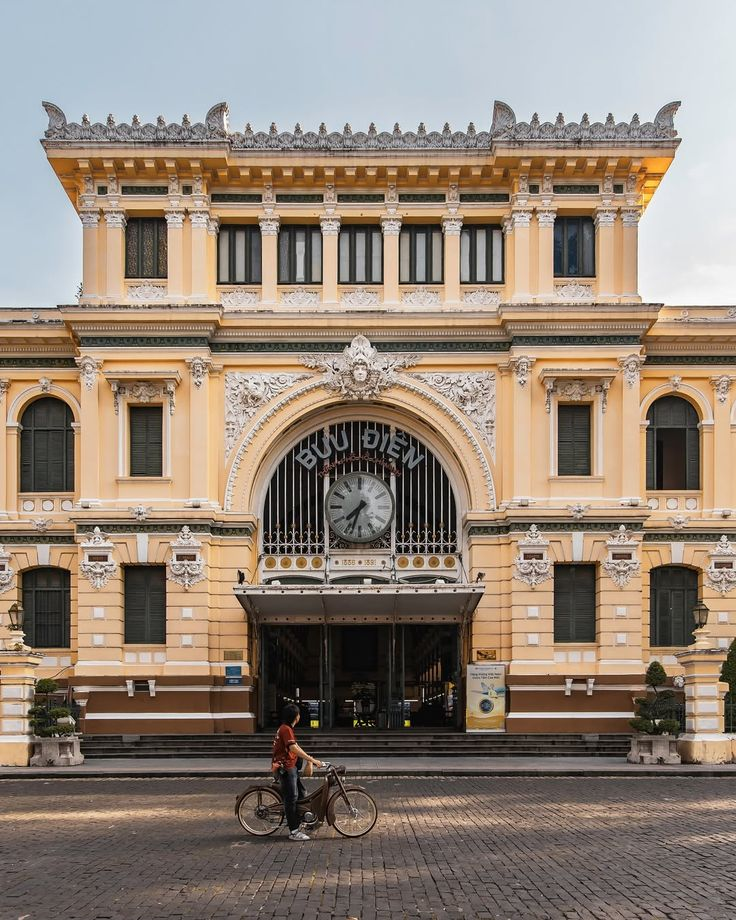

NHẬT KÝ KHÁM PHÁ · SÀI GÒN
Sài Gòn
không vội vã, cứ thong thả mà đi.
Len qua những con hẻm thân quen, tìm một quán ngon ven đường và lắng nghe thành phố kể chuyện qua từng góc phố.
Sài Gòn không vội vã, cứ thong thả mà thương.
 SAIGON
SAIGONLANDMARK 81 10° 46' N · 106° 42' E
01 / VỀ CUỐN NHẬT KÝ NÀY
Thành phố này,
càng đi càng thấy thương.
Đây là cuốn nhật ký ghi lại hành trình mình khám phá Sài Gòn - từ những con hẻm nhỏ, hàng quán lâu năm đến nhịp sống rất riêng của thành phố. Không cần lịch trình, chỉ cần một chút tò mò và đôi chân sẵn sàng đi.
Thành phố để thương
Góc phố muốn ghé
Câu chuyện muốn kể
02 / NHỮNG ĐIỀU ĐANG CHỜ KHÁM PHÁ
Hôm nay mình đi đâu thế?
Mỗi góc phố có một câu chuyện.
Chọn một nơi để bắt đầu nhé.
01

ĂN GÌ Ở SÀI GÒN?
Bữa sáng trong con hẻm nhỏ
Thử một tô hủ tiếu nóng và ngồi ngắm thành phố bắt đầu ngày mới.
Mở hành trình02

DẠO QUANH PHỐ
Một vòng qua phố cũ
Những mái nhà xưa, hàng cây rợp bóng và nhịp phố không vội.
Cùng đi nhé03
SÀI GÒN LÚC LÊN ĐÈN
Thành phố sau giờ tan tầm
Ngắm ánh đèn, nghe tiếng phố và tìm một góc nhỏ để dừng chân.
Khám phá03 / HẸN NHAU Ở SÀI GÒN